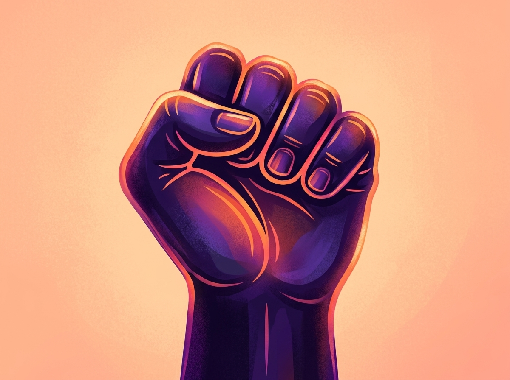

Different Forms, One Shared Harm

Phisical Violence
Psychological Violence
Sexual Violence
Economic Violence
Online Violence
The Numbers Speak
736 Million
women have experienced physical or sexual violence
1 in 2
women have experienced some form of violence
Why Does it Happen?
Deep-rooted gender inequality
Harmful social norms and stereotypes
Lack of access to justice
Silence and stigma